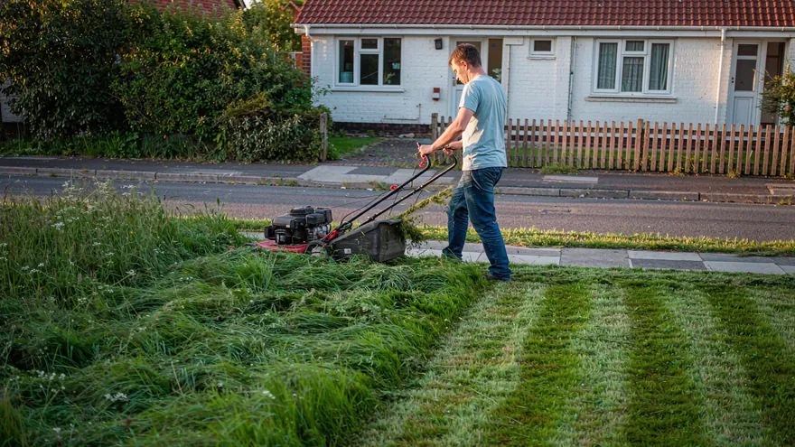
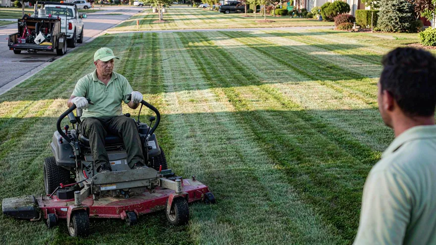
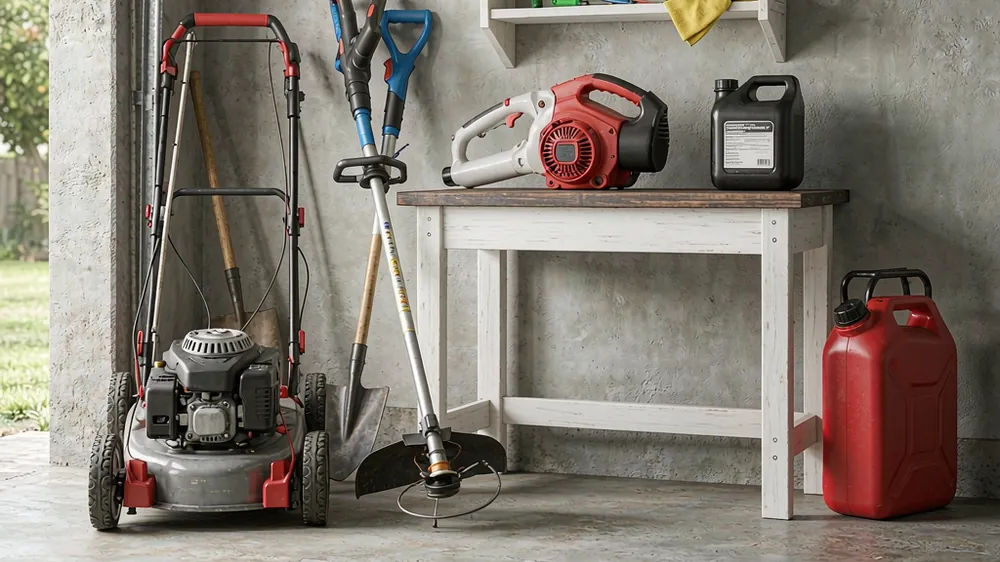

Do it yourself
Hire a crewSame lawn, two very different invoices. The question is not whether a pro is faster — it is whether their speed is worth more than your hours. The comparison below prices both sides with one model.
Why "which is cheaper?" is the wrong question
Most people frame it as a single yes/no. But the honest answer depends on three moving parts: your lawn size, your hourly time value, and whether you already own a mower. A 2,000 sq ft city lot is a 25-minute job you can do for the cost of a push mower. A half-acre property is a different animal — and a single mow is a different decision from a five-year commitment.
That's why we compare the two options across eight time horizons, not just "year one."
The two numbers that decide it
Hiring = predictable cash
A pro averages about $49 per visit for a typical 5,000 sq ft lawn in a low-cost state — squarely inside the published 2026 national range of $42–$68/visit. On a weekly plan that's ~$197/month and ~$2,364 for a 12-month (warm-climate) season. Bigger or harder lawns climb fast: a 1-acre lot runs ~$182/visit, a steep, overgrown 10,000 sq ft yard ~$260/visit. Edging, blowing and disposal are baked in.
DIY = low cash, your time
Once you own a mower, a 5,000 sq ft lawn costs about $53/season in fuel and upkeep and 28.5 hours of your time. The mower itself is a one-time $380–$700 for a self-propelled. So DIY is cheap out of pocket — but the moment your Saturday is worth real money, those 28.5 hours start to cost more than the pro's invoice.
What the equipment actually costs
| Lawn size | Best-fit mower | Equipment (one-time) | Running cost/yr |
|---|---|---|---|
| < 2,000 sq ft | Reel / electric push | $120–$450 | ~$30 |
| 2,000–5,000 sq ft | Self-propelled 21" | $380–$700 | ~$50–$80 |
| 5,000–30,000 sq ft | Self-propelled / electric riding | $380–$4,500 | ~$50–$120 |
| 0.3–0.7 acre | Gas or electric riding 42" | $1,900–$4,500 | ~$80–$150 |
| 0.7+ acre | Zero-turn 54" | $3,200–$6,500 | ~$150+ |

Medium lawn, side-by-side across every horizon
This is the headline example: a 5,000 sq ft lawn, mowed weekly, in Florida (12-month season, 48 mows). DIY uses a self-propelled mower; your time is valued at $20/hr. The "all-in" column adds your labour at that rate. Read it top to bottom — the winner flips only at the longest horizons for high earners, never on a single mow.
| Horizon | Mows | DIY out-of-pocket | DIY all-in (@$20/hr) | Hire a pro | Verdict |
|---|---|---|---|---|---|
| 1 mow | 1 | $1 | $13 | $49 | DIY by $36 |
| 1 month | 4 | $4 | $52 | $197 | DIY by $145 |
| 1 quarter | 12 | $13 | $156 | $591 | DIY by $435 |
| Half season | 24 | $26 | $312 | $1,182 | DIY by $870 |
| Full season | 48 | $53 | $623 | $2,364 | DIY by $1,741 |
| Year 1 (mower bought) | 48 | $593 | $1,163 | $2,364 | DIY by $1,201 |
| Year 2 (mower owned) | 48 | $53 | $623 | $2,364 | DIY by $1,741 |
| 5 years | 240 | $803 | $3,657 | $11,820 | DIY by $8,163 |
Large lawn: the gap widens
A 1-acre lot in Texas (10-month season, 40 mows) on a gas riding mower. Here DIY's fixed handling time is a smaller share of the job, so the mower earns its keep even harder. At $20/hr:
| Horizon | Mows | DIY out-of-pocket | DIY all-in (@$20/hr) | Hire a pro | Verdict |
|---|---|---|---|---|---|
| 1 mow | 1 | $2 | $23 | $182 | DIY by $159 |
| 1 quarter | 12 | $20 | $274 | $2,181 | DIY by $1,907 |
| Full season | 40 | $65 | $914 | $7,270 | DIY by $6,356 |
| Year 1 | 48 | $618 | $1,637 | $8,724 | DIY by $7,087 |
| 5 years | 240 | $931 | $6,023 | $43,620 | DIY by $37,597 |
A big lawn is exactly where the "just hire it" instinct is most expensive: the pro's per-visit price scales with area, while your riding mower is a sunk cost. DIY wins by $6,356 in a full season — and $7,087 in year one even after buying the mower.
When DIY stops winning: the high earner
Same 10,000 sq ft lawn in New York, but now your time is worth $120/hr. The mowing still takes ~51 min and 20.5 hours a season, but that time is now worth $2,460 — more than the pro's whole invoice. The table flips:
| Horizon | Mows | DIY out-of-pocket | DIY all-in (@$120/hr) | Hire a pro | Verdict |
|---|---|---|---|---|---|
| 1 mow | 1 | $2 | $105 | $102 | Hire by $3 |
| Full season | 24 | $45 | $2,510 | $2,448 | Hire by $62 |
| Year 1 | 48 | $631 | $5,560 | $4,896 | Hire by $664 |
| 5 years | 240 | $995 | $25,638 | $24,480 | Hire by $1,158 |
Canada: shorter season, same logic
In Ontario a 5,000 sq ft lawn gets only a 6-month season (24 mows), priced in CA$. The pattern is identical — DIY wins on cash until your time is worth more than about CA$81/hr:
| Horizon | Mows | DIY out-of-pocket | DIY all-in (@CA$20/hr) | Hire a pro | Verdict |
|---|---|---|---|---|---|
| 1 mow | 1 | CA$2 | CA$14 | CA$50 | DIY by CA$37 |
| Full season | 24 | CA$48 | CA$333 | CA$1,212 | DIY by CA$879 |
| Year 1 | 48 | CA$798 | CA$1,369 | CA$2,424 | DIY by CA$1,055 |
| 5 years | 240 | CA$1,181 | CA$4,035 | CA$12,120 | DIY by CA$8,085 |
When to DIY
- Small-to-medium lawn (< ~10,000 sq ft) you can finish in under an hour
- You already own a mower, or the one-time cost pays back inside year one
- Your time is worth less than the area-adjusted breakeven (≈ $80/hr for a medium lawn)
- You genuinely enjoy the exercise
When to hire
- Your hourly time value clears the breakeven (≈ $80+/hr for a medium lawn, ≈ $112/hr for a 10,000 sq ft lawn)
- Large, sloped or obstacle-heavy lawn where DIY time balloons
- You want edging, blowing and cleanup handled with zero Saturday commitment
- You'd rather not store, fuel and maintain a machine
See your own numbers
Plug in your exact lawn size, condition, region and mower and get a live DIY-vs-hire verdict across every horizon — plus a free printable quote.
Open the Calculator →Is it worth hiring someone to mow my lawn?
For a typical 5,000 sq ft lawn, DIY costs about $53/season in fuel and upkeep plus your own time, while hiring runs ~$49/mow (~$2,364/season on a weekly plan in a warm state). DIY wins on cash for most homeowners until your time is worth more than about $80/hr. Hiring makes sense if you value your Saturday above that, have a large or difficult lawn, or simply do not want the work.
How much does equipment cost if I mow myself?
A reel or manual mower is $120–$280, an electric or gas push mower $250–$550, a self-propelled $380–$700, an entry riding mower $1,900–$3,200, and a zero-turn $3,200–$6,500. Add roughly $50–$80/year in fuel and upkeep, more for riding mowers.
When does hiring a lawn service become cheaper than DIY?
Only once your hourly time value clears the breakeven. For a medium 5,000 sq ft lawn that point is about $80–$81/hr (or ~$77/hr once you count mower wear). Below that, DIY is cheaper; above it, hiring pays for itself in the time you get back. A single mow or a single month is almost always cheaper to DIY because you have not yet paid for a full season of service.